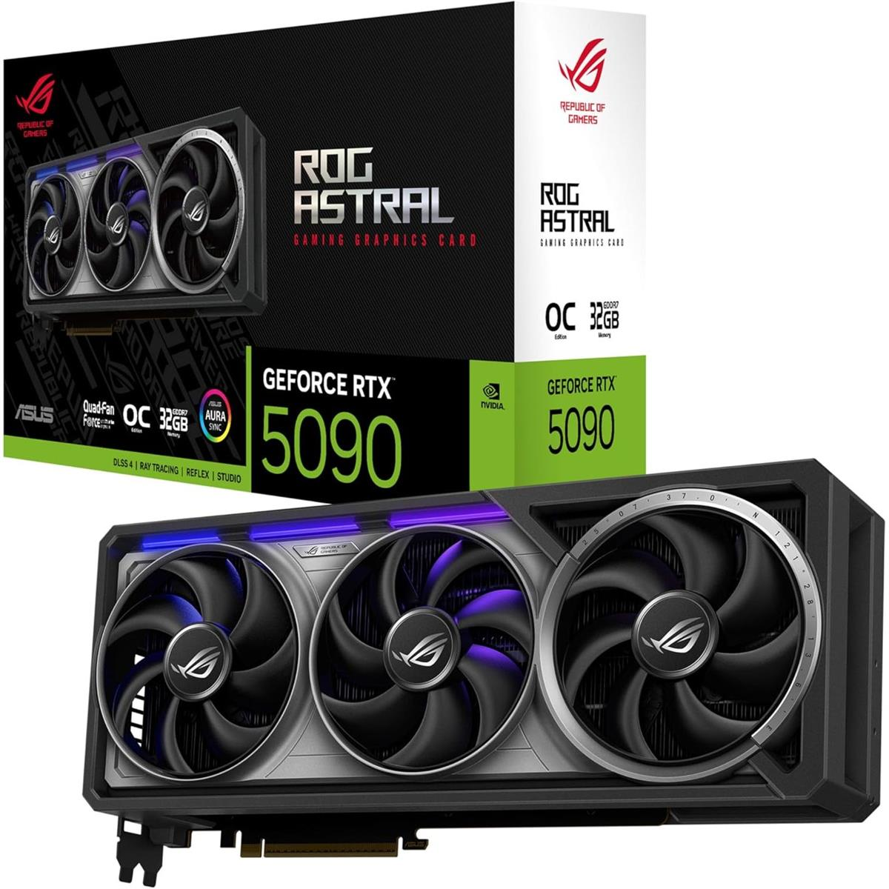

MarketThe RTX 5090 delivers a substantial performance leap in gaming compared to its predecessor, the RTX 4090. It offers significantly higher frame rates, particularly in demanding 4K and ray tracing scenarios, often exceeding 100 FPS at 4K with ray tracing enabled. This allows for smoother, more visually impressive gaming experience The RTX 5090 is a powerhouse capable of delivering exceptional gaming performance, particularly at higher resolutions and with ray tracing enabled. Its increased VRAM and potential for DLSS 4 further enhance its capabilities. However, potential buyers should consider the high power draw and cost of the card.